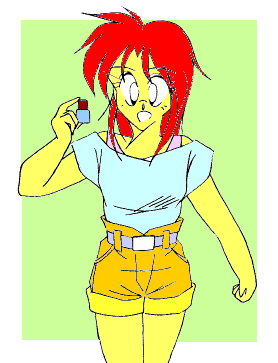
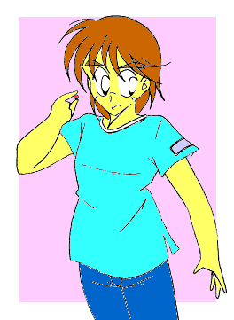
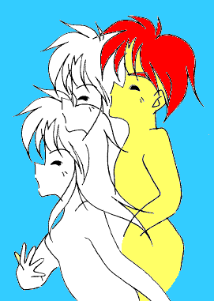
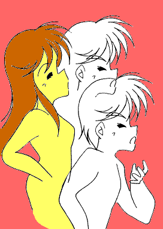
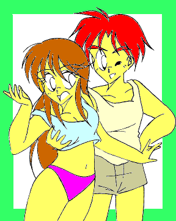
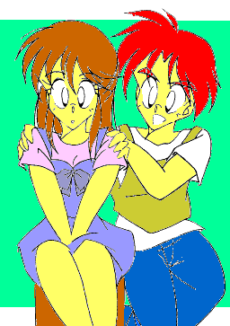
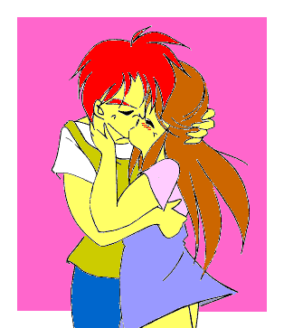
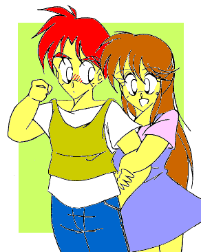
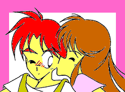

イラスト・ストーリー
ＲＥＶＥＲＳＩＢＬＥ！
ＣＲＥＡＴＥＤ ＢＹ ＭＯＮＤＯ
「おはようっ、裕斗（ゆうと）っ。……さ、入って入ってっ！」
「…………おい、涼子（りょうこ）。日曜の朝っぱらからヒト呼び出して、今度はいったいなんなんだ？」
「ふっふ〜んっ、実はすっごいもの見つけたのよっ」
「ま、またお前んちの実家の蔵からかあっ？ じいさんが戦時中に中国の奥地からかっぱらってきたっていう……」
「ひっ、人聞きの悪いこと言わないでよねっ。それに今度は、ほんっとすっごいんだからっ」
「…………それで何度えらい目に会ってきたと思ってんだ……」
〈登場人物〉
金森 涼子（かなもり りょうこ） 好奇心旺盛で快活な女の子。
長谷川 裕斗（はせがわ ゆうと） 涼子のＢＦ。いつも尻に敷かれている。


「…………で、おれも飲むのか？」
「当然でしょ。あたしが男の子になるわけだし、裕斗が女の子になってくれないとバランス悪いじゃない。
……それに男同士なんて、はっきり言って不毛だわ」
「そ、そういう問題か？」
「そういう問題よ」
「で、でももし元に戻れなかったらどーすんだよ？」
「ああ、心配ないわよ。元に戻るときは反対の色の薬を飲めばいいんだって。言われてみれば当たり前よね」
「そんな安直な……」
「……いい？ いち、にーの、さんで飲むからね。わかった？」
「わ、わかったよ。…………うううっ」
「よお〜っし、いち、にーの、さんっ！」
……………………………………………………………………………………


「んっ、……んああっ、あっ、ああっ……あっ、あ……
あああっ、うあっ、あ…………
あ、あ、あんっ、あ、あああんっ、
ああっ……あっああんっ!!」
……………………………………………………………………………………
「へえ〜っ、男の身体ってこんな感じがするんだ……。あっ、背が高くなってる」
「…………」
「……おっ、あーっ、あーっ。声も低くなってる。……ふう〜ん、結構男前だな、うんっ」
「…………お、おい、涼子……」
「わ〜っ胸まっ平ら……って当たり前か。ふ〜ん。……おっ、これが男の…………わっ、なんだ？
…………うわっ、すごいすごいっ。すごいぞこれっ」
「……おいっ」
「なんだよさっきからっ。おっ、…………ふう〜ん、へえ、可愛い……」
「え……っ？」
「目はぱっちりだし髪の毛サラサラだし、顔つきも身体つきも完全に女の子だな……」
「お、おい……」

「ほーっ、胸も立派になっちゃって。……ほらっ」
「……ほらっ、鏡見てみなよ」
「う……っ、こ、これが…………おれ？」
「こらこら、ゆうみみたいな可愛い女の子が、そんな甲高い声で
『おれ』 なんて言うんじゃないっ」
「うっ、あ、あ…………あ、あの、『ボク』
じゃ、駄目？」
「駄目だよっ。
ボーイッシュな女の子もいいけど、やっぱりおれはおしとやかな女の子らしい子が好きだなっ」
「…………おいっ、なんか異常に適応してないか？ 涼子」
「へへっ、ばれたか。
実はあの薬、二個飲んだんだ」
「二個？」
「そっ。一個だけだと身体が変化するだけなんだけど、ふたつ飲むと感じ方や人格まで変わることができるんだ。
だから今のおれは、正真正銘、心身ともに男なのさっ」
「…………」
「——というわけで、ほらっ。ゆうみももひとつ飲みなよ」
「え……遠慮しとく…………」
「…………ま〜、そう言わずに……ほれっ」
「うっ！！ んーっ、んっ、ん————————っ
！！ ごくっ……
……………………………………………………………………………………
……………………………………………………………………………………
……………………あ…………り、りょう、い……ち、くん？」
「気分はどう？ ゆうみっ」
「…………ゆうみ……………………あたし、ゆうみ…………」
「おっ♪」
「あたしは…………ゆうみ……………………ふふっ、女なんだ、あたし……」



どうも、ＭＯＮＤＯです。
今回は、イラストと会話文だけでお話を構成してみました。
「薬で人格まで身体に合わせて変わってしまう」
なんて、『神変・黄金城』 や 『ライト・ライト・ストーリー』
でありましたが、そういうのにはなんとなく背徳的な匂いを感じたりします。
わたしが書くと、こんな風にコメディっぽくなってしまうのですが……。
１９９９．８．１５ 読み返してみると、結構恥ずいぞこれ……の、ＭＯＮＤＯ